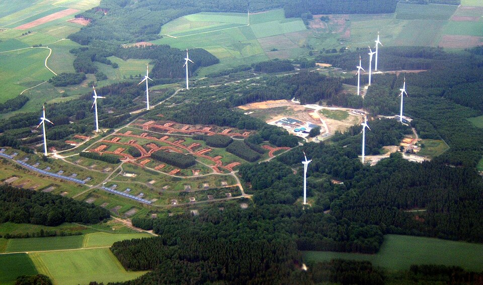
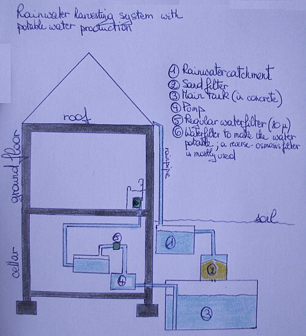

L'énergie
À Viridis, toute l'électricité vient du soleil, du vent et de l'eau. Rien ne vient du pétrole ni du charbon.
Un parc d'énergie
Des éoliennes et des panneaux solaires sont installés autour de la ville.

L'eau de pluie
L'eau de pluie est récupérée sur les toits et gardée dans une cuve. Elle sert à arroser les plantes.
